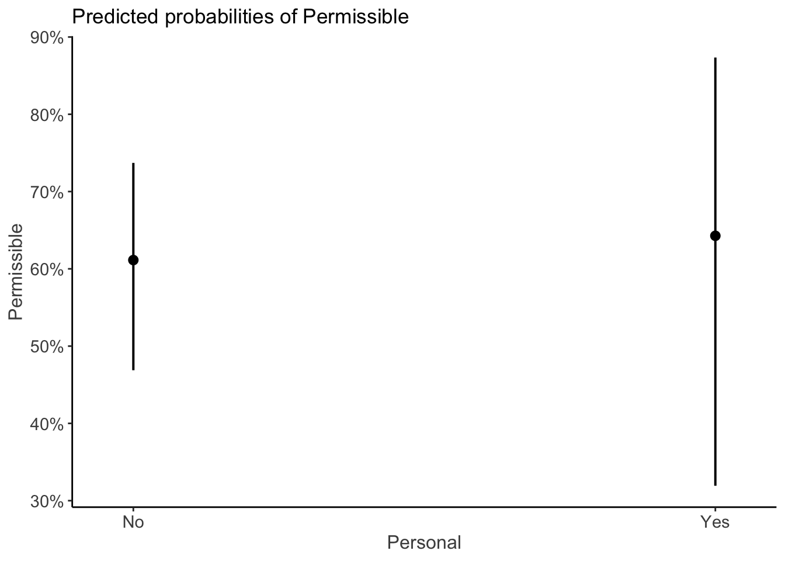
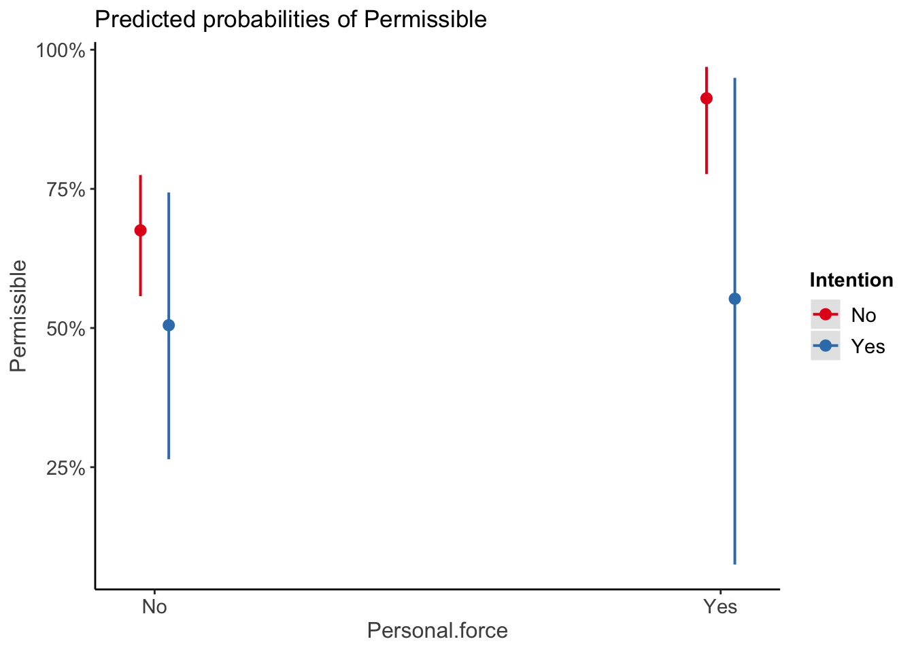

I am so happy you are here! You have decided to take your first steps toward learning a very powerful statistical programming languages (sounds impressive, right). R has a universe of statistical and data science tools (what we call “packages”) that allow you to do just about anything you want to with data. If the tool you need isn’t available, R is so cool that you can (with enough skill and effort) create it yourself! Obviously I am not going to be able to fully teach you R through this one example analysis but I hope there will be enough here for you to be able to run analyses for your own experiment and begin to see why this might me something worth learning and investing your time in. There are loads of great introductions for R available for free online to help build a deeper understanding, including how to install R and RStudio if you are having problems.
Here I provide the R code for the generalized linear mixed effects model that we used to analyse our in-class experiment. The experiment set out to test whether the dual process theory v2.0 is better than v1.0 at explaining moral judgments. We had the hypothesis that
If dual process theory v2.0 is more descriptively adequate than v1.0, then the model should fit the data better
If you copy and paste the code below (the stuff in boxes) into a new R script (you can open one in RStudio with “File” \(\\rightarrow\) “New File” \(\\rightarrow\) “R Script”) you should be able reproduce these analyses. Ok, let’s get going.
First, we will need to install and/or load then packages we nneed.
# Package names
packages <- c("ggplot2", "tidyverse", "lme4", "lmerTest", "sjPlot", "performance")
# Install packages not yet installed
installed_packages <- packages %in% rownames(installed.packages())
if (any(installed_packages == FALSE)) {
install.packages(packages[!installed_packages])
}
# Packages loading
invisible(lapply(packages, library, character.only = TRUE))Setting a working directory can be helpful as it means you can keep all of your files and outputs in this folder making it easier to access them and meaning you don’t have to type so much.
setwd("~/Dropbox/Documents/My data/Moral sense task/practical/website")Your working directory address will be different depending on your folders and OS (this is for a Mac, Windows machines are different if you look at a folder/file and “get info” it will tell you the directory. Alternatively, you can just use the default directory that was set when you installed RStudio)
Next, we will need to import the data from the in-class study. Here we import the datafile (“data example.csv”). This only works if the file is in your working directory. You can either put it there or specify the whole file address or you can use RStudio to open the file.
df_all <- read_csv("data example.csv")For ease of interpretation, set deviation coding for the factors (what does that mean! Just that this makes it easier to interpret the estimates of the effect size with complex models including interactions, so it’s a bit like making it an ANOVA - the estimates are for main effects and interactions).
# make sure everything is factor
df_all$Task.Name <- as.factor(df_all$Task.Name)
df_all$Personal <- as.factor(df_all$Personal)
df_all$DPv1.0.Permissible <- as.factor(df_all$DPv1.0.Permissible)
df_all$Personal.force <- as.factor(df_all$Personal.force)
df_all$Intention <- as.factor(df_all$Intention)
df_all$DPv2.0.Permissible <- as.factor(df_all$DPv2.0.Permissible)
#set deviation contrasts for ease of interpretation -.5 vs .5
c<-contr.treatment(2)
my.coding<-matrix(rep(1/2, 2), ncol=1)
my.simple<-c-my.coding
my.simple
#keys .5 Q-Yes, -.5 P-Yes
contrasts(df_all$Task.Name)<-my.simple
contrasts(df_all$Task.Name)
#personal .5 Yes, -.5 No
contrasts(df_all$Personal)<-my.simple
contrasts(df_all$Personal)
#prediction DPv1.0 act no intended .5 Yes, -.5 No
contrasts(df_all$DPv1.0.Permissible)<-my.simple
contrasts(df_all$DPv1.0.Permissible)
#personal force .5 Yes, -.5 No
contrasts(df_all$Personal.force)<-my.simple
contrasts(df_all$Personal.force)
#intention .5 Yes, -.5 No
contrasts(df_all$Intention)<-my.simple
contrasts(df_all$Intention)
#prediction DPv2.0 .5 Yes, -.5 No
contrasts(df_all$DPv2.0.Permissible)<-my.simple
contrasts(df_all$DPv2.0.Permissible)We fit a generalized linear mixed models (GLMM) to test the hypothesis. We attempted to specify “maximal” models (see Barr et al., 2013) with all random intercepts and slopes for participant and dilemma.
Let’s fit the GLMM for the dual process v1.0 model. We can see the summary and get some 95% CIs.
#Dual process v1.0 model
DPv1.0<- glmer(Permissible ~ Personal + (1+Personal|ID) + (1+Personal|Dilemma), data=df_all, family = binomial(link = "logit"))
summary(DPv1.0)## Generalized linear mixed model fit by maximum likelihood (Laplace
## Approximation) [glmerMod]
## Family: binomial ( logit )
## Formula: Permissible ~ Personal + (1 + Personal | ID) + (1 + Personal |
## Dilemma)
## Data: df_all
##
## AIC BIC logLik deviance df.resid
## 4310.8 4362.4 -2147.4 4294.8 4672
##
## Scaled residuals:
## Min 1Q Median 3Q Max
## -11.2170 -0.4933 0.1455 0.4501 7.6298
##
## Random effects:
## Groups Name Variance Std.Dev. Corr
## Dilemma (Intercept) 3.064 1.751
## Personal2 5.466 2.338 0.17
## ID (Intercept) 1.582 1.258
## Personal2 1.328 1.153 0.86
## Number of obs: 4680, groups: Dilemma, 104; ID, 45
##
## Fixed effects:
## Estimate Std. Error z value Pr(>|z|)
## (Intercept) 0.5201 0.2949 1.764 0.0777 .
## Personal2 0.1343 0.4865 0.276 0.7825
## ---
## Signif. codes: 0 '***' 0.001 '**' 0.01 '*' 0.05 '.' 0.1 ' ' 1
##
## Correlation of Fixed Effects:
## (Intr)
## Personal2 0.512confint(DPv1.0, parm = "beta_", method="Wald")## 2.5 % 97.5 %
## (Intercept) -0.05778327 1.098047
## Personal2 -0.81920370 1.087813The personal (vs. impersonal) parameter doesn’t seem to differ significantly from the null. The log odds ratio = 0.134 so the odds ratio is exp(0.134) = 1.14 about equal odds. The 95% CIs show a fair amount of imprecision in the estimate - we need more data for more precision. We can also see the information criterion methods for model comparison with AIC = 4310.8 and BIC = 4362.4.
###plot data We can plot the data from the model.
set_theme(base = theme_classic())
plot_model(DPv1.0, type = "pred")## $Personal
Here we can see similar rates of permissible judgments across personal and impersonal conditions. The 95% CIs on the estimates show a fair amount of imprecision in the estimate, at least for the personal condition (this reflects the relative low number of personal dilemmas in the task).
OK, let’s do the GLMM for dual process model v2.0. Here we add the parameters and their interaction to the model.
#Dual process v2.0 model
DPv2.0<- glmer(Permissible ~ Personal.force*Intention + (1+Personal.force+Intention|ID) + (1+Personal.force+Intention|Dilemma), data=df_all, family = binomial(link = "logit"), control = glmerControl(optimizer = "nloptwrap", optCtrl = list(algorithm = "NLOPT_LN_NELDERMEAD",
maxfun = 1e7,
maxeval = 1e7)))
summary(DPv2.0)## Generalized linear mixed model fit by maximum likelihood (Laplace
## Approximation) [glmerMod]
## Family: binomial ( logit )
## Formula: Permissible ~ Personal.force * Intention + (1 + Personal.force +
## Intention | ID) + (1 + Personal.force + Intention | Dilemma)
## Data: df_all
## Control:
## glmerControl(optimizer = "nloptwrap", optCtrl = list(algorithm = "NLOPT_LN_NELDERMEAD",
## maxfun = 1e+07, maxeval = 1e+07))
##
## AIC BIC logLik deviance df.resid
## 4345.3 4448.6 -2156.7 4313.3 4664
##
## Scaled residuals:
## Min 1Q Median 3Q Max
## -9.2514 -0.4840 0.1505 0.4590 8.4201
##
## Random effects:
## Groups Name Variance Std.Dev. Corr
## Dilemma (Intercept) 0.4643 0.6814
## Personal.force2 4.3776 2.0923 0.09
## Intention2 6.7468 2.5975 0.60 0.85
## ID (Intercept) 1.3629 1.1674
## Personal.force2 0.7499 0.8660 0.61
## Intention2 0.2233 0.4725 0.27 -0.13
## Number of obs: 4680, groups: Dilemma, 104; ID, 45
##
## Fixed effects:
## Estimate Std. Error z value Pr(>|z|)
## (Intercept) 0.8280 0.2569 3.223 0.001267 **
## Personal.force2 0.9024 0.3990 2.262 0.023720 *
## Intention2 -1.4247 0.3842 -3.708 0.000209 ***
## Personal.force2:Intention2 -1.4234 0.7540 -1.888 0.059034 .
## ---
## Signif. codes: 0 '***' 0.001 '**' 0.01 '*' 0.05 '.' 0.1 ' ' 1
##
## Correlation of Fixed Effects:
## (Intr) Prsn.2 Intnt2
## Persnl.frc2 0.443
## Intention2 0.356 0.518
## Prsnl.f2:I2 0.416 0.425 0.435confint(DPv2.0, parm = "beta_",method="Wald")## 2.5 % 97.5 %
## (Intercept) 0.3245250 1.33139892
## Personal.force2 0.1203752 1.68450944
## Intention2 -2.1777038 -0.67161361
## Personal.force2:Intention2 -2.9011586 0.05430117The parameters for personal force and intention are both significant. The log odds ratio for personal force = 0.90 so the odds ratio is exp(0.90) = 2.46, so (weirdly) the odds are about twice as likely that an action will be seen as permissible if it has personal force. The 95% CIs show a fair amount of imprecision in the estimate - we need more data for more precision. More in line with expectations, we can see the log odds ratio for intention (means vs. side-effect) = -1.4247 so the odds ratio is exp(-1.4247) = .24, so the odds are about four times as likely that an action will be seen as permissible if it is not intentional - harm as a side-effect. The 95% CIs also show a fair amount of imprecision in the estimate. Finally, we can also see the information criterion model comparison indices, AIC = 4345.3 and BIC = 4448.6.
###plot data We can plot the data from the model.
set_theme(base = theme_classic())
plot_model(DPv2.0, type = "int")
#Model comparison Let’s have a look at the model comparisons.
Now we can compare the models using Bayes Factors to get the relative likelihood of the models given the data we have.
test_performance(DPv1.0,DPv2.0)## Name | Model | BF
## ----------------------------
## DPv1.0 | glmerMod |
## DPv2.0 | glmerMod | 1.99e-19
## Each model is compared to DPv1.0.This shows us that the dual process v2.0 model (our alternative hypothesis) is 1.99^-19 times more likely than the dual process v1.0 model (our null hypothesis) given the data. Being 1.99^-19 times more likely means it’s actually a lot less likely!* That is, since our BF is (a lot) less than 1 it mean that the evidence is favouring the null. We can see this if we take the inverse 1/1.99^-19 = 476659.7. This shows us that the dual process v1.0 model is 476,000 times more likely than v2.0
*if that’s counter intuitive consider if you were 2 times more likely than your friend to get a fist in a horrible practical module, here you’d be twice as likely to get top grades. If you were 1 times more likely than your friend to ace this module from hell, then you’d be equally likely. However, if you were 0.5 times (less than 1) more likely to get greater than or equal to 70%, then you’d be less likely than your friend to get that first.
##information criterion (AIC and BIC) We cann look at our more traditional information criterion indices
compare_performance(DPv1.0,DPv2.0)## # Comparison of Model Performance Indices
##
## Name | Model | AIC (weights) | AICc (weights) | BIC (weights) | R2 (cond.) | R2 (marg.) | ICC | RMSE | Sigma | Log_loss | Score_log | Score_spherical
## ---------------------------------------------------------------------------------------------------------------------------------------------------------------
## DPv1.0 | glmerMod | 4310.8 (>.999) | 4310.9 (>.999) | 4362.4 (>.999) | 0.636 | 4.518e-04 | 0.636 | 0.348 | 1.000 | 0.390 | -Inf | 2.154e-04
## DPv2.0 | glmerMod | 4345.3 (<.001) | 4345.5 (<.001) | 4448.6 (<.001) | 0.621 | 0.028 | 0.610 | 0.349 | 1.000 | 0.392 | -Inf | 3.379e-04Here we see what we could have seen in the model outputs above: that the dual process v1.0 model has a relatively better fit than the v2.0 model. That is, both it’s AIC 4310 (vs. 4345) and BIC 4362 (vs. 4448) are lower than those of v2.0.